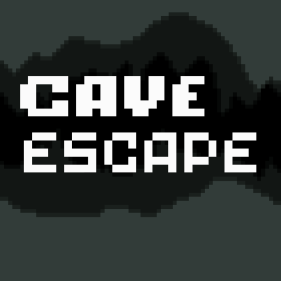

Estou estudando sobre programação/informática, atualmente estou estudando sobre HTML, JS, CSS, PHP, MySQL, C++ e Python.
Site com o proposito de demostrar os projetos desenvolvidos ao longo da disciplina de Experiencia criativa
Projeto 1
Jogo Desenvolvido no Construct

Cave Escape é um jogo inspirado em Hollow Knight e em Ori, desenvolvido pelo grupo da disciplina com o Construct que é um editor de jogos 2D baseado em HTML5, desenvolvido pela Scirra Ltda. possui um mapa relativamente grande, trilha sonora, inimigos ao longo do mapa, npcs, e um Boss final.
Universing é Sistema Solar 3D inspirado no projeto MusicOfTheSpheres de JerryPadfield, desenvolvido pelo grupo da disciplina com o Processing que é um software flexível e uma linguagem para aprender a codificar dentro do contexto das artes visuais, desenvolvido pela C.E.B. Reas, Ben Fry. possui câmera livre, trilha sonora produzida por um dos integrantes do grupo, gráfico, imagem e Video.
Aplicação Web Desenvolvido no HTML,CSS,PHP,MySQL e HASH
Dividas do Vilmar é um projeto com o objetivo de criar um site com conteúdo aleatório, Fizemos um site descontraido, contendo piadas internas da máteria de Expêriencia Criativa, o site, possui, Cadastro, imagens, vídeos e hash.